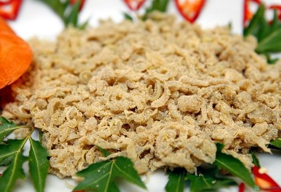

Nhệch là tên một loại cá có hình dáng tương tự như lươn. Người ta cũng dùng tro để làm sạch nhớt trên mình nó rồi mới làm thành món ăn như kho, nấu canh chua, om… Đặc biệt là gỏi nhệch. Sau khi sơ chế, cá được cắt lát mỏng, trộn thính. Phần da cũng cắt thành miếng chiên giòn. Còn xương cá được giã nhuyễn, nấu thành thứ nước chấm có tên đặc biệt không kém tên cá – chẻo. Chẻo nấu xong, pha với gừng, tỏi, ớt, hạt tiêu, sả băm nhỏ. Gỏi nhệch ăn kèm rau chanh, lá sung, rau húng, tía tô. Cứ cầm lá sung gắp miếng gỏi, cho thêm tí da, cuốn lại chặt tay rồi chấm vào chẻo là đủ thấy món ăn dân giã đến độ nào. Vị bùi bùi của lá sung cùng với thịt cá ngon, béo béo da, thơm lừng thính từ gạo rang, quyện đậm đà với chẻo cay cay nồng nồng khiến gỏi nhệch ngày càng được ưa chuộng.